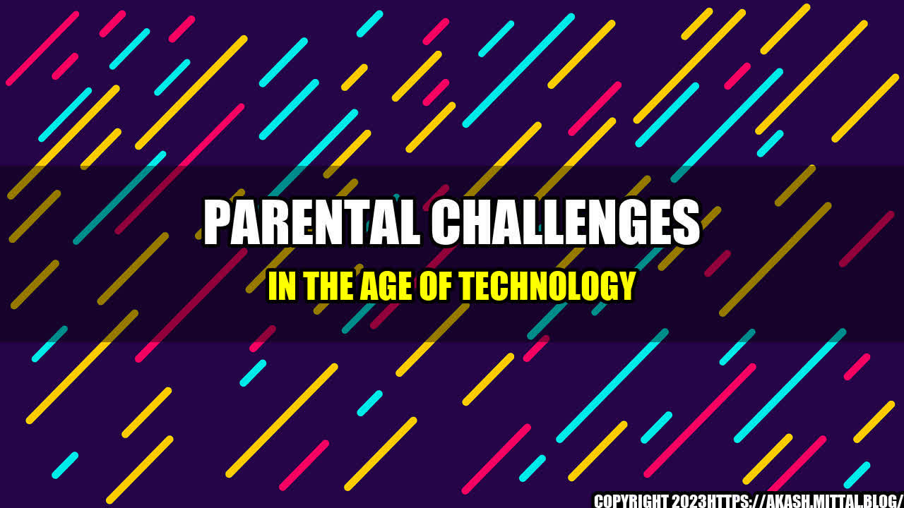

Parental Challenges in the Age of Technology

I recently took my kids to the park on a beautiful Saturday morning. As they ran around and played with their friends, I sat on a bench and scrolled through my smartphone, occasionally glancing up to make sure they were safe. But then I looked around and realized that I was not alone. Almost every other parent there was doing the same thing. We were all simultaneously present and absent.
As a parent, I understand the appeal of technology. It can help us stay connected, organized, and informed. But it can also be a source of distraction and stress. In this article, I will explore some of the challenges that parents face in the age of technology, and offer some tips for finding balance.
Quantifiable examples
Let's start with some quantifiable examples of the technological challenges that parents face:
- According to a study by Common Sense Media, children under 8 spend an average of 2 hours and 19 minutes per day using screen media, while those aged 8 to 12 spend an average of 4 hours and 36 minutes per day.
- A survey by Pew Research Center found that 46% of parents with children aged 13 to 17 are concerned about the amount of time their children spend on their smartphones, and 51% are concerned about the impact of social media on their children's mental and emotional health.
- A study by researchers at the University of Michigan found that parents who frequently check their smartphones are more likely to experience symptoms of depression and anxiety, which can have a negative impact on their children's well-being.
Personal anecdotes and case studies
While statistics can be helpful in illustrating the scope of the problem, personal anecdotes and case studies can add depth and nuance to our understanding.
Here are a few examples:
- A friend of mine recently confided that she feels guilty for relying on screens to occupy her kids while she works from home. She worries that she is not being a "good" parent, even though she knows that she is doing what she needs to do to support her family.
- Another friend of mine has a teenage daughter who is addicted to social media. She spends hours scrolling through Instagram, Snapchat, and TikTok, and seems to be constantly comparing herself to others. My friend has tried to limit her daughter's screen time, but it has been a difficult battle.
- Finally, I will share a personal story. A few months ago, I was having a busy day at work and felt overwhelmed. I decided to take a 5-minute break and scroll through social media. But those 5 minutes turned into 20, and suddenly I realized that I had missed an important call from my son's school. I felt terrible and knew that I had let him down.
Tips for finding balance
Despite the challenges, there are things that parents can do to find balance in the age of technology. Here are three tips:
- Set boundaries. This can mean different things for different families, but some examples might include turning off screens during family meals, setting limits on screen time, or designating certain times of day as "screen-free" zones.
- Be present. When you are with your children, try to be fully present and engaged. Put away your phone and focus on the moment. This can help build deeper connections and show your children that they are important to you.
- Be kind to yourself. Parenting is hard enough without adding extra pressure to be perfect. Remember that everyone makes mistakes, and that finding balance is an ongoing process. Be kind to yourself and model self-care for your children.
Conclusion
The challenges of parenting in the age of technology are real. But with awareness, compassion, and practical tips, we can find balance and build deeper connections with our children. Let's put down our screens and be fully present for the moments that matter.
Curated by Team Akash.Mittal.Blog
Share on Twitter Share on LinkedIn